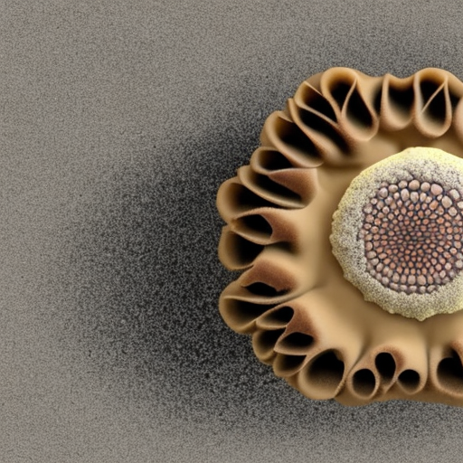

the crispy
Aeolianite Pastry
with foraminifera chips

Ingredients:
- 250 grams of coarse grained sand
- 250 grams of fine grained sand
- 25 grams of foraminifera
- 3 tablespoons of sugar
- 0.4 liter of seawater
Preparation:
- Mix the two types of sand.
- Add the sugar and foraminifera and mix again.
- Add the seawater.
- Put in the oven and bake for 24 hours at a temperature of 40 degrees Celsius.
- Bon appetite!